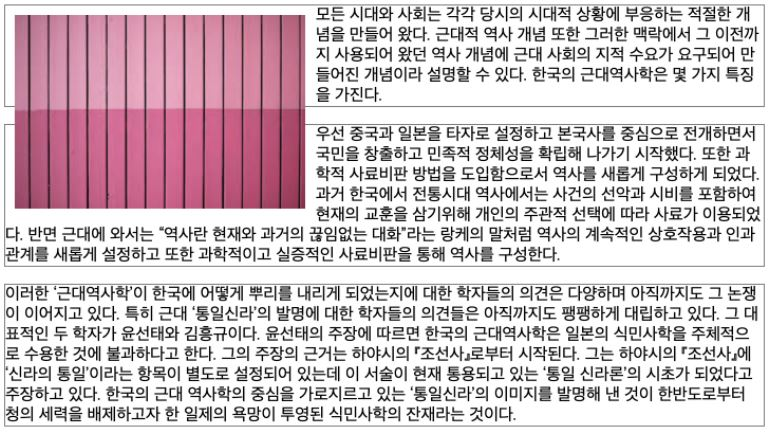

CSS 레퍼런스 북
float
float 라는 단어는 원래 ‘뜨다’ 라는 의미이며, 원래 웹페이지에서 이미지를 어떻게 띄워서 텍스트와 함께 배치할 것인가에 대한 속성입니다.
float 속성은 원래 이미지와 텍스트 배치 용도로 등장했지만, 요즘에는 레이아웃용으로 많이 사용하고 있습니다.
태그를 float 속성 및 width, height 속성 등을 이용하여 레이아웃을 배치하는 방식입니다.
- inherit: 부모 요소에서 상속
- left: 왼쪽에 부유하는 블록 박스를 생성. 페이지 내용은 박스 오른쪽에 위치하며 위에서 아래로 흐름.
- right: 오른쪽에 부유하는 블록 박스를 생성. 페이지 내용은 박스 왼쪽에 위치하며 위에서 아래로 흐름. 이후 요소에 clear 속성이 있으면 페이지 흐름이 달라짐. none 이 아니라면 display 속성은 무시된다.
- left와 right를 통해 부유속성을 지정시 display는 무시됩니다. (none은 제외) 또한 이후 요소에 clear 속성이 있으면 페이지 흐름이 달라집니다.
.content > img{ float: left }
예제
float 속성
| 속성 | 설명 |
|---|---|
| float | HTML 요소가 주변의 다른 요소들과 자연스럽게 어울리도록 설정함. |
| clear | float 속성이 적용된 후 나타나는 요소들이 더 이상 float 속성에 영향을 받지 않도록 설정함. |
| overflow | 내용(content)의 크기가 해당 요소를 감싸고 있는 컨테이너 요소보다 클 때 어떻게 처리할지를 설정함. |
| overflow-x | 내용(content)의 크기가 해당 요소의 수평 방향 박스(box)를 넘어갈 때 어떻게 처리할지를 설정함. |
| overflow-y | 내용(content)의 크기가 해당 요소의 수직 방향 박스(box)를 넘어갈 때 어떻게 처리할지를 설정함. |
clear
float 속성을 사용하면 주변으로 컨텐츠가 흐르듯이 배치가 되는데, 이를 해제하기 위해 clear 속성을 사용합니다. clear 속성이 지정된 영역 이후로는 더 이상 float가 작동하지 않습니다.
.left { background-color: #FF8C00; width: 150px; height: 50px; float: left; }
.right { background-color: #9932CC; width: 150px; height: 50px; float: right; }
p { clear: both; }
.right { background-color: #9932CC; width: 150px; height: 50px; float: right; }
p { clear: both; }
clear 속성
| 속성 | 설명 |
|---|---|
| clear:none | 기본 값으로 clear를 설정하지 않은 것과 같습니다. |
| clear:left | 왼쪽으로 붙는 float 정렬을 취소합니다. |
| clear:right | 오른쪽으로 붙는 float 정렬을 취소합니다. |
| clear:both/th> | 오른쪽 왼쪽 모두 붙는 float 정렬을 취소합니다. |